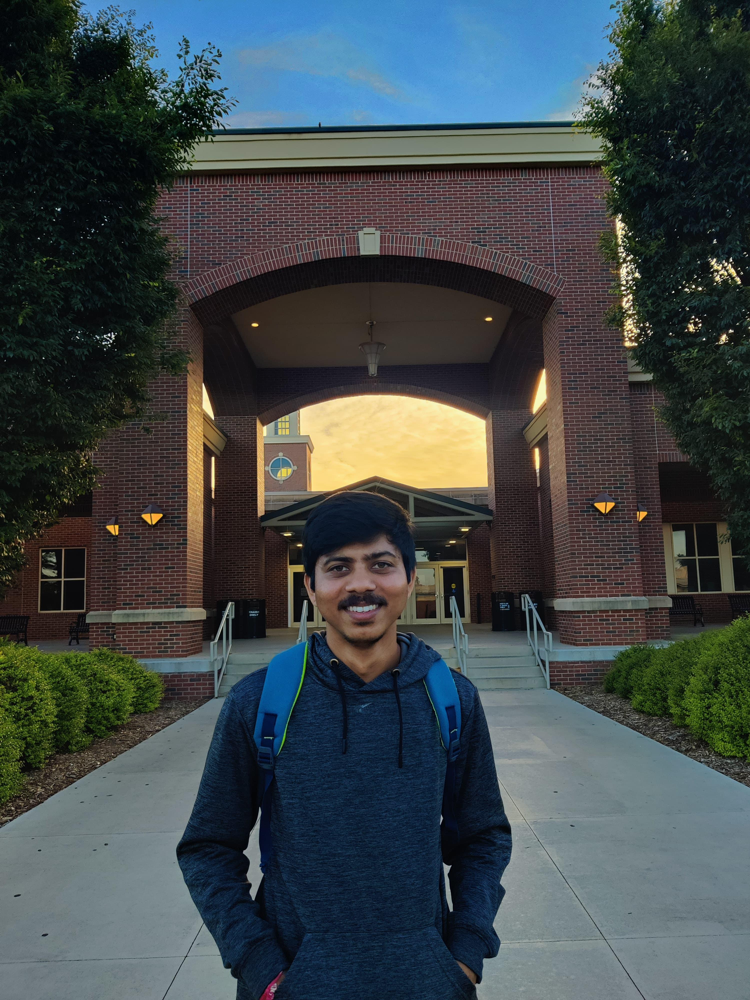

- Cyclic Voltammetry
- Square wave voltammetry
- Electrochemical Impedance Spectroscopy
- Chronoamperometry and Potentiometric techniques
Rahul P K
Research Assistant, Department of Chemistry
Indian Institute of Technology Palakkad
About Me

I am a dedicated doctoral student in department of chemistry at Oklahoma State University, specializing in research of Electrochemistry, Analytical Chemistry, Biosensors, Nano-biotechnology, and Energy (Conversion and Storage), with particular emphasis on the development of “Point of Care/Wearable Biosensor Devices - Towards Biomedical, Environmental, Agriculture, Quality control and Security Applications”. My research passion lies in the intersection of electroanalytical chemistry, biological sciences, and physics, particularly in developing innovative biosensors and energy devices. My current projects focus on electrochemical based multiplexed wearable microneedle biosensor device for biomedical applications and colorimetric multiplexed biosensors for diverse applications including biomedical, environmental, and quality control. But, not limited too.
Download CVEducation
Master of Science, Chemistry
Indian Institute of Technology Palakkad, Kerala, India
2018 - 2021
Bachelor of Science, Chemistry
KLE's P. C. Jabin Science College, Hubballi, Karnataka, India
2014 - 2016
Research Areas
- Electrochemistry and Analytical Chemistry
- Wearable and Point of Care Sensing Devices
- Biosensors and Chemical sensors
- Electrocatalysis and Energy Applications
- Micro/Nanofabrication
- Nano-biotechnology and 2D Nano materials
- Stretchable and flexible electronics
Research Experiences
Research Assistant
Indian Institute of Technology Palakkad, Kerala, India
Aug 2023 - Present
- Co-Fe bimetallic/Ti3C2Tx Mxene based nanocomposites for overall electrocatalytic water splitting in alkaline medium.
- MIP based Minimal invasive microneedle sensor for continuous real-time monitoring of neurotransmitter.
Master's Major Project Thesis
Indian Institute of Technology Palakkad, Kerala, India
Nov 2022 - June 2023
Electrochemical Strip Sensor Based on Graphene-Au-PEDOT Nanocomposite for Detection and Continuous Monitoring of Dacarbazine.
Publications
Electrochemical strip sensor based on Graphene-Au-PEDOT nanocomposite for detection and continuous monitoring of Dacarbazine.
Rahul P. K, Reshmi A. S, Chandan Kafley, Shekhar K, K. Yugender Goud*.
ACS Applied Nanomaterials 2023
Read MoreTi3C2Tx -rGO-chitosan-based microcatheter sensor for real-time continuous monitoring of propofol: toward improved anesthetic management.
Chandan Kafley, Rahul P K, Kavitha Lakavath, Shekhar K, K.Yugender Goud*.
Springer Nature Michrochemica Acta 2023
Read MoreProfessional Skills
Analytical Techniques
Synthesis
- MXenes
- Metal-Metal oxide hybrid nanocomposites
- Graphene-Metal Nanoparticles
- Conducting polymers
- Biopolymer based synthesis
- Green synthesis
- Molecularly imprinted polymers (MIPs)
Characterization Techniques
Hands-on: XRD, FT-IR, XPS, Field Emission Scanning Electron Microscope (FE-SEM), High pressure liquid chromatography (HP-LC)
Result analysis: Transmission electron microscopy (TEM), Dynamic light scattering (DLS), UV-Vis spectroscopy, Thermogravimetric Analysis (TGA), Differential Scanning Calorimeter (DSC), and Fluorescence correlation spectroscopy (FCS)
Fabrication
- 3D printed Microneedles
- Screen printed electrodes
- Laser Induced Graphene (LIG) electrodes
- Microcatheters
Design Tools
- Auto CAD
- Fusion 360
- Solid works
- Blender
- Biorender
Theoretical/Computational Skills
Structure optimization using Avogadro and Orca, frequency optimization of molecular structures, single point energy, 1D and 2D potential energy scan of ground state geometry and transition state geometry by Density Functional Theory (DFT) method, Hatree-Fock (HF) method and semi empirical method.
Software
- Sci-finder
- ChemDraw
- Origin
- Mendely referencing
- ImageJ
- MS Office
Programming Skills
- Matlab
- Python
- Machine learning
Awards and Recognitions
All India Rank 5130 in IIT JAM Examination 2021
for Masters Entry program at IITs
Qualified Graduate Aptitude Test in Engineering (GATE)
2022 and 2023 in Chemistry for PhD admission at any IITs in India
Conferences and Workshops
31st CRSI National Symposium in Chemistry
National Institute of Technology, NIT Rourkela, Odisha (Poster Presentation)
2023
Chemistry Laboratory Safety Workshop
Department of Chemistry, IIT Palakkad, India
2022
National webinar on "New Horizon of Bioinspired Nano-chemistry"
KLE's P. C. Jabin Science College, Hubballi, Karnataka, India
2018
Get in Touch
Contact Details
Email: rspcky98@gmail.com
Phone: +91 7892228956, +91 9353837950
Address: Indian Institute of Technology Palakkad, Kerala, India, 678557